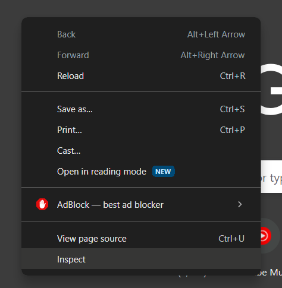
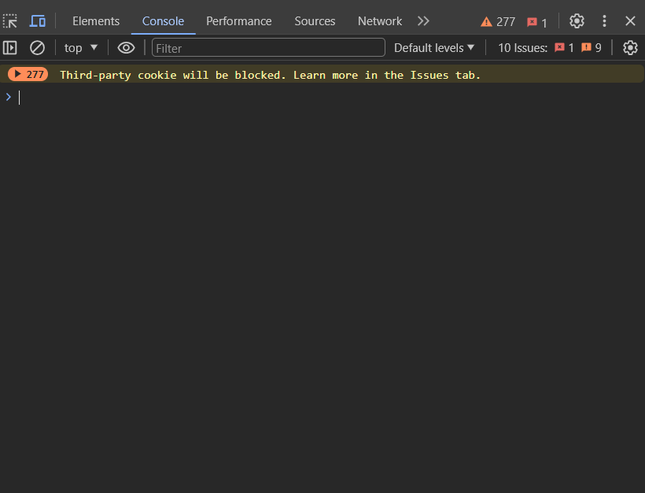

JavaScript (JS) is a lightweight interpreted (or just-in-time compiled) programming language with
first-class functions. While it is most well-known as the scripting language for Web pages, many
non-browser environments also use it, such as Node.js, Apache CouchDB and Adobe Acrobat.
JavaScript
is a prototype-based, multi-paradigm, single-threaded, dynamic language, supporting object-oriented,
imperative, and declarative (e.g. functional programming) style
JavaScript is a powerful programming language that can add interactivity to a website. It was invented by Brendan Eich.
JavaScript itself is relatively compact, yet very flexible. Developers have written a variety of tools on top of the core JavaScript language, unlocking a vast amount of functionality with minimum effort. These include:
There are two way to run JavaScript program
Steps to run JS program in Console:
Open any Browser like Google Chrome, Microsoft Edge, etc.
Right Click On Chrome Screen and Click on View Inspect.

OR
Press Function Key F12
Then Write a Program to run in Console

scripts. Within the
scripts folder, create a new text document called main.js, and save it.
index.html file, enter this code on a new line, just before the
closing </body> tag:
<link> element for CSS. It
applies the JavaScript to the page, so it can have an effect on the HTML (along with the
CSS, and anything else on the page).main.js file:
index.html in
your browser. You should see something like this: